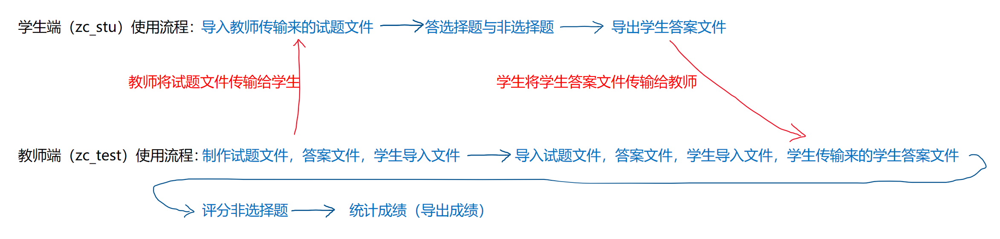
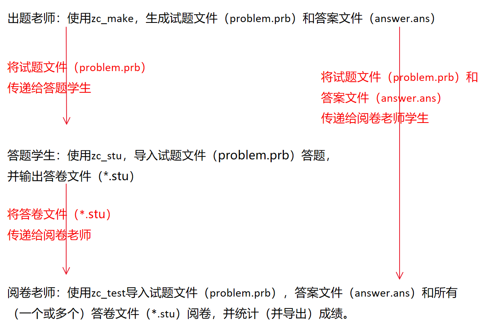

此部分可以在“下载”中的“zc评测系统使用说明.docx”下载查看，由于篇幅较长，不在网站中显示
此部分可以在“下载”中的“zc评测系统使用说明.docx”下载查看，由于篇幅较长，不在网站中显示
此部分可以在“下载”中的“文件实例.zip”下载查看（试题文件：文件实例.zip/试题文件.txt；答案文件：文件实例.zip/答案文件.txt；学生导入文件：文件实例.zip/学生/学生导入文件.txt），文件中已给出了学生答案文件
因著作权尚未申请完毕，现仅发布加密压缩文件，参见“下载”
此部分可以在“下载”中的“ZC试卷评测系统2.0说明书.pdf”下载查看，由于篇幅较长，不在网站中显示
此部分可以在“下载”中的“文件实例(ZC2.0).zip”下载查看